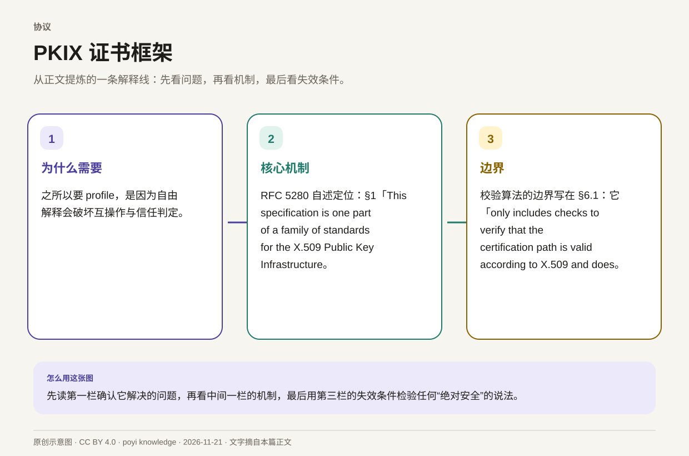
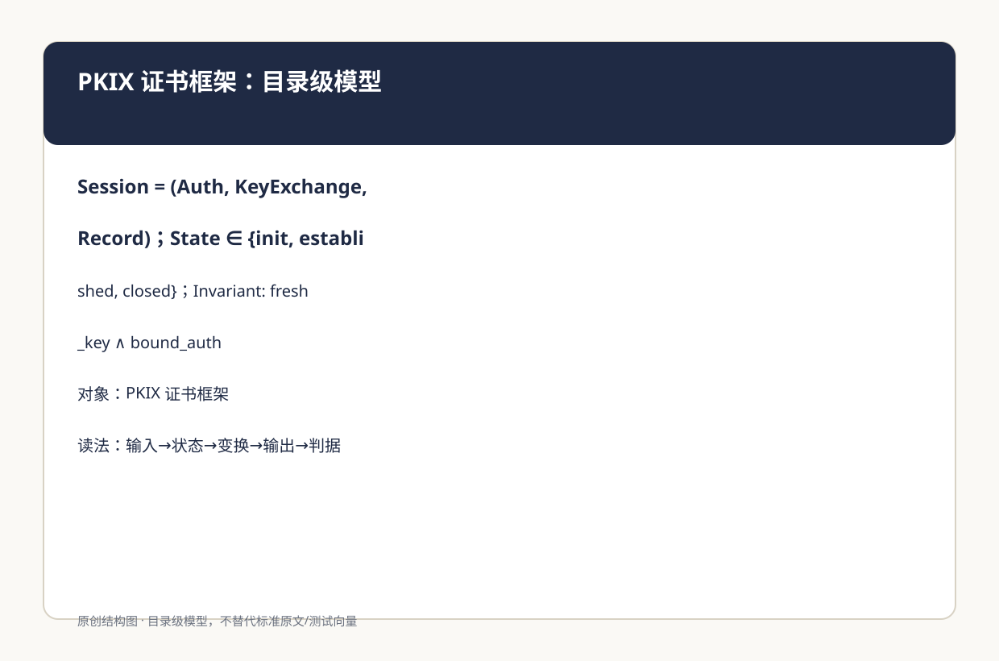

原理与机制
协议：PKIX 证书框架（Internet X.509 Public Key Infrastructure）。RFC 5280 自述定位：§1「This specification is one part of a family of standards for the X.509 Public Key Infrastructure (PKI) for the Internet.」并说明「This specification profiles the format and semantics of certificates and certificate revocation lists (CRLs) for the Internet PKI.」§4 把证书侧的目标写成「This section presents a profile for public key certificates that will foster interoperability and a reusable PKI.」——它规定证书字段与扩展怎么填，并对签发方施加合规义务，但不描述 CA 的运营流程与信任策略。

为什么重要
之所以要 profile，是因为自由解释会破坏互操作与信任判定。有效期字段被硬性规定编码：§4.1.2.5「CAs conforming to this profile MUST always encode certificate validity dates through the year 2049 as UTCTime; certificate validity dates in 2050 or later MUST be encoded as GeneralizedTime.」基本约束则被强制标注：§4.2.1.9「Conforming CAs MUST include this extension in all CA certificates that contain public keys used to validate digital signatures on certificates and MUST mark the extension as critical in such certificates.」
应用与实例
§4.1.2.5 还给出无限期证书的写法：「To indicate that a certificate has no well-defined expiration date, the notAfter SHOULD be assigned the GeneralizedTime value of 99991231235959Z.」§4.2.1.9 用 pathLenConstraint 限制链深：「A pathLenConstraint of zero indicates that no non-self-issued intermediate CA certificates may follow in a valid certification path.」§6.1 规定实现义务：「A conforming implementation MUST include an X.509 path processing procedure that is functionally equivalent to the external behavior of this algorithm.」

边界与攻击面
校验算法的边界写在 §6.1：它「only includes checks to verify that the certification path is valid according to X.509 and does not include checks to verify that the certificates and CRLs conform to this profile.」并且明确不建议补上这类检查（「this profile RECOMMENDS against including such checks.」）；同时未知关键扩展是硬失败：「Note that clients MUST reject the certificate if it contains an unsupported critical extension.」——也就是说合规性与有效性是两件事，而 §6.1 的算法只管后者。
历史与背景
RFC 5280 由 D.Cooper、S.Santesson、S.Farrell、S.Boeyen、R.Housley 与 W.Polk 署名，2008 年 5 月发布，Standards Track，头部标「Obsoletes: 3280, 4325, 4630」。§1 的差异清单记录了与 RFC 3280 的偏离，其中一条涉及路径校验：「The path validation algorithm specified in Section 6 no longer tracks the criticality of the certificate policies extensions in a chain of certificates.」另一条是扩展关键性要求的调整：「Section 4.2.1.11 requires marking the policy constraints extension as critical.」
逐步示例与核验
形式模型与复算步骤
[\mathrm{Adv}^{\Pi}_A(\lambda)\le n\cdot\mathrm{Adv}^{\mathrm{prf}}F(\lambda)+\varepsilon{\mathrm{aead}}(\lambda)]
PKIX 证书框架的公开参数、密钥/随机数与消息；变量说明：Π 协议，A 敌手，n 会话数，PRF/AEAD 为底层原语。1.把协议消息序列写成状态机。2.用混合论证逐个替换原语。3.把剩余优势归约到 PRF/AEAD 安全。边界：公式只覆盖已登记的参数与假设；参数取值、标准版本和实现细节仍以来源为准。
参考出处
- Wikipedia search entry for PKIX 证书框架. https://zh.wikipedia.org/w/index.php?search=PKIX%20%E8%AF%81%E4%B9%A6%E6%A1%86%E6%9E%B6
- Handbook of Applied Cryptography (Menezes, van Oorschot, Vanstone). https://www.cacr.math.uwaterloo.ca/hac/
- RFC 5280: Internet X.509 Public Key Infrastructure. https://www.rfc-editor.org/rfc/rfc5280
- Published standard/RFC for PKIX 证书框架. https://www.rfc-editor.org/rfc/rfc5280